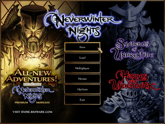
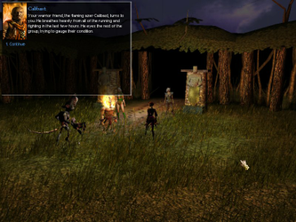
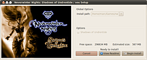
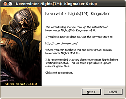
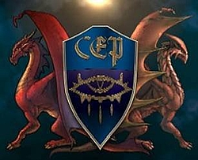
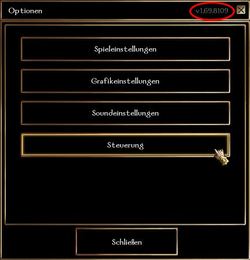
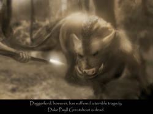
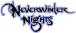

Neverwinter Nights
Dieser Artikel wurde für die folgenden Ubuntu-Versionen getestet:
Ubuntu 14.04 Trusty Tahr
Zum Verständnis dieses Artikels sind folgende Seiten hilfreich:
Neverwinter Nights  ist ein Rollenspiel, welches auf den Regeln der dritten Edition von Dungeons & Dragons basiert. Im Norden der Vergessenen Reiche startet das Spiel. Die Stadt Neverwinter wird von der Pest heimgesucht. Nach der Ausbildung in der Akademie gilt es diese zu besiegen...
ist ein Rollenspiel, welches auf den Regeln der dritten Edition von Dungeons & Dragons basiert. Im Norden der Vergessenen Reiche startet das Spiel. Die Stadt Neverwinter wird von der Pest heimgesucht. Nach der Ausbildung in der Akademie gilt es diese zu besiegen...
Es gibt unterschiedliche Installationswege - je nach Spieleversion. So gibt es neben der Basisversion des Spiels Addons und Premium-Module einzeln erhältlich oder als Sonderausgabe zusammen zu erwerben. Eine Grafikkarte mit 3D-Unterstützung wird vorausgesetzt.
|  |  |
| Menü | Kingmaker |
Bioware¶
Nach der offizielle Methode lädt man von bioware.com den Linux Client herunter.
Die Linux Client Resources (nwresources129.tar.gz) herunterladen und entpacken [3]
Die Sprachdateien (z.B. nwgerman1.29.tar.gz) herunterladen und im Spieleverzeichnis von nwn entpacken.
Die Binärdateien des Linux Clients (nwclient129.tar.gz) herunterladen und ebenfalls im Spieleverzeichnis entpacken.
Nicht alle Dateien sind über den ursprünglichen Weg zu erreichen. Unter den Links sind diese offiziellen Pakete als Direktlink zu finden.
Hinweis:
Sofern keine Erweiterung aufgespielt werden soll empfiehlt es sich das Spiel zu aktualisieren.
Nun kann das Spiel über "Anwendungen -> Spiele" gestartet werden.
Loki¶
Zuerst lädt man sich von liflg.org den aktuellen Installer herunter:
nwn_VERSIONSNUMMER-multilanguage-2.run - Basisspiel
nwn.sou_VERSIONSNUMMER-multilanguage-2.run - "Erweiterung - Der Schatten von Undernzit"
nwn.hotu_VERSIONSNUMMER-multilanguage-2.run - "Erweiterung - Die Horden des Unterreichs"
und setzt dann die Ausführrechte [2].
Um Neverwinter Nights als Benutzer zu installieren [5], führt man das Skript nwn_VERSIONSNUMMER-multilanguage-2.run im Dateimanager aus. Den Anweisungen folgen - das Spiel wird dann im Heimatverzeichnis installiert. Um sich die Videosequenzen des Spiels anschauen zu können sollte man das Häkchen bei "[x] BinkPlayer" setzen und die hier beschrieben Schritte ausführen,
Hinweis:
Sofern keine Erweiterung aufgespielt werden soll empfiehlt es sich das Spiel zu aktualisieren.
Abschließend noch das Update nwn_VERSIONSNUMMER-german.update.run auf die gleiche Weise einspielen. Das Programm kann nun gestartet und der Code, welcher dem Spiel beiliegt, eingegeben werden.
Wine¶
PlayOnLinux¶
Das Wine-Frontend PlayOnLinux bietet ein automatisches Installationsskript für die Neverwinter Nights Diamond Edition an. Dazu PlayOnLinux aufrufen [9], die Schaltfläche "installieren" drücken und "GOG.com-Neverwinter Nights Diamond Edition" auswählen. Nun nur noch den Anweisungen folgen und das Spiel installieren.
Die Diamondedition enthält das Hauptspiel sowie die Erweiterungen Shadows of Underntide, Hordes of the Underdark und Kingmaker.
Die GOG.com Version ist in Englisch.
|  |
| Erweiterung |
Erweiterungen¶
Bioware¶
Die Erweiterungen sollten in dieser Reihenfolge eingespielt werden:
Der Schatten von Undernzit
Die Horden des Unterreichs
Sofern man nur "Die Horden des Unterreichs" aufspielen möchte kann man dort fortfahren zu lesen. Ein nachträgliches zufügen von "Der Schatten von Undernzit" ist nicht mehr möglich.
Es gibt noch andere offizielle Erweiterungen (Kingmaker, Shadowguard ...), die bis 2009 auf der offiziellen Homepage erworben werden konnten. Diese dürfen nicht weiter verkauft werden. Die Authentifizierungs-Server um die bereits erworbenen Module weiterhin spielen zu können, funktionieren jedoch weiter. Das Addon Kingmaker gibt es jedoch als englische Version auf CD weiterhin käuflich zu erwerben.
Der Schatten von Undernzit¶
Um die Erweiterung zu installieren zuerst die CD ins Laufwerk einlegen. Nun folgende Befehle [1] eingeben:
cd ~/nwn #Pfad ggf. anpassen z.B. /usr/local/games/nwn unzip /media/cdrom0/Data_Shared.zip #CDROM-Laufwerksangabe ggf. ändern unzip /media/cdrom0/Language_data.zip unzip /media/cdrom0/Language_update.zip unzip /media/cdrom0/Data_Linux.zip rm data/patch.bif rm patch.key ./fixinstall
Nun kann das Spiel mit der Erweiterung gestartet werden. Der Befehl lautet ./nwn. Nachdem der Key eingegeben wurde kann das Spiel beginnen.
Hinweis:
Sofern keine weitere Erweiterung aufgespielt werden soll kann man einen Patch einspielen.
Die Horden des Unterreichs¶
Um diese Erweiterung zu installieren zuerst die CD einlegen. Die Erweiterung kann unabhängig von "Der Schatten von Undernzit" installiert werden. Nun wie folgt vorgehen [1]:
cd ~/nwn #Pfad ggf. anpassen z.B. /usr/local/games/nwn rm data/patch.bif #nicht nötig, wenn vorher "Der Schatten von Undernzit" installiert wurde. rm patch.key #nicht nötig, wenn vorher "Der Schatten von Undernzit" installiert wurde. rm data/xp1patch.bif #nicht nötig, wenn vorher "Der Schatten von Undernzit" installiert wurde. rm xp1patch.key unzip /media/cdrom0/Data_Shared.zip unzip /media/cdrom0/Language_data.zip unzip /media/cdrom0/Language_update.zip ./fixinstall
Zusätzlich muss man sich bei Bioware einloggen, um die "HotU Linux Client Binaries" runterzuladen und ebenfalls in den NWN-Ordner zu entpacken.
Das Spiel kann nun gestartet und der Key eingegeben werden.
Hinweis:
Sofern keine weitere Erweiterung aufgespielt werden soll kann man einen Patch einspielen.
|  |
| Kingmaker |
Premium-Module¶
Sofern das Basisspiel mit den Erweiterungen aufgespielt und gepatcht ist können die im Online Shop erworbenen Premium-Module verwendet werden. Erschienen sind die ausschließlich in englischer Sprache erhältlichen Module:
Kingmaker
Pirates of the Sword Coast
Infinite Dungeons
Diese Module, z.B. Kingmaker.zip, müssen lediglich in das Spieleverzeichnis entpackt [3] werden. Einige als Premium-Module konzipierte Arbeiten wurden kostenlos für die NWN-Community freigegeben.
Hinweis:
Die CD-Version von Kingmaker enthält die Module Kingmaker, Shadowguard und Witch's Wake. Mit Version 1.69 stehen 2 der Module kostenlos zur Verfügung.
Kingmaker¶
Sofern man die CD-Version, von Kingmaker oder die Diamond Edition besitzt kann man diese nur über Wine [7] installieren.
Hierzu ist eine neue Installation von Wine erforderlich. Hier entweder einen bestehenden Ordner kurzfristig umbenennen oder entfernen [1]:
rm -fr ~/.wine winecfg
Nach der Erstellung von ~/.wine anschließend in das Installationsverzeichnis wechseln und das Laufwerk N: anlegen, welches auf den Installationsordner verweist:
ln -s $PWD $HOME/.wine/dosdevices/n\:
Anschließend müssen die Registrierungseinträge für Wine vorbereitet
cat <<> nwn.reg [HKEY_LOCAL_MACHINE\Software\BioWare\NWN\Neverwinter] "Location"="n:\\\" EOF
und an Wine übergeben werden:
regedit nwn.reg rm nwn.reg
Die Installation der Erweiterung kann nach diesen Vorbereitungen erfolgen [8].
Liflg¶
Für Neverwinter Nights gibt es aktuell zwei interessante Erweiterungen, deren Installationsskripte ebenfalls von liflg.org heruntergeladen werden können. Es gilt jedoch zu beachten, dass das Update nwn.sou_VERSIONSNUMMER-german.update.run verwendet werden sollte, wenn das Basisspiel und nur die Erweiterung "Der Schatten von Undernzit" installiert wird. Möchte man das Basisspiel sowie nur die Erweiterung "Die Horden des Unterreichs" installieren nutzt man nwn.hotu_VERSIONSNUMMER-german.update.run. Letzteres Update wird auch gewählt, wenn man das Basisspiel mit beiden Erweiterungen nutzen möchte. Die Installation der offiziellen Erweiterungen entspricht dem Ablauf der des Basisspiels, welches bereits installiert sein muss.
Die Erweiterungen unbedingt in der angeführten Reihenfolge einspielen und nach jedem Installationsschritt prüfen, ob das Spiel läuft. Anschließend kann man einen Patch einspielen.
nwn.sou_VERSIONSNUMMER-multilanguage-2.run - Installationsskript für "Der Schatten von Undernzit"
nwn.hotu_VERSIONSNUMMER-multilanguage-2.run - Installationsskript für "Die Horden des Unterreichs"
Hinweis:
Sollte keine weitere Erweiterung aufgespielt werden - Patch einspielen.
|  |
| Community Expansion Pack |
Community Expansion Packs¶
Rund um das Spiel hat sich eine große Fangemeinde gebildet, welche inoffizielle Erweiterungen entwickelt. Die Community Expansion Packs erweitern das Basisspiel auf neue Spielinhalte und ist somit oft erforderlich für viele Module, die von der Community erstellt worden sind. Weitere Informationen hierzu findet man auf der Seite von nwvault.ign.com .
Darkness over Daggerford¶
Darkness over Daggerford ist ein kostenloses Modul für Neverwinter Nights, welches in den Forgotten Realms spielt und den Spieler 25-30 Stunden entführt. Entwickelt wurde es von Ossian Studios® Inc. und war ursprünglich als Premium-Modul gedacht.
Installation¶
Von ign.com  die Datei NWN-DarknessOverDaggerford_Installer_v1.2.rar herunterladen und entpacken [4]. In den Ordner wechseln und die darin enthaltene NWN-DarknessOverDaggerford_Installer_v1.2.exe ebenfalls entpacken. Die im neuen Ordner hinterlegten Dateien in die entsprechenden Unterordner im Spieleverzeichnis kopieren. Sofern im Installationsverzeichnis von Neverwinter Nights der Ordner tlk, für die Datei ossian.tlk, nicht existiert legt man diesen an.
die Datei NWN-DarknessOverDaggerford_Installer_v1.2.rar herunterladen und entpacken [4]. In den Ordner wechseln und die darin enthaltene NWN-DarknessOverDaggerford_Installer_v1.2.exe ebenfalls entpacken. Die im neuen Ordner hinterlegten Dateien in die entsprechenden Unterordner im Spieleverzeichnis kopieren. Sofern im Installationsverzeichnis von Neverwinter Nights der Ordner tlk, für die Datei ossian.tlk, nicht existiert legt man diesen an.
Anschließend wird das Update NWN-DarknessOverDaggerford_Updater_v1.2.rar von o.g. Seite heruntergeladen und nach dem bekannten Muster eingespielt.
Hinweis:
Sollte die .exe-Datei nicht entpackt werden können genügt es .exe nach .zip zu ändern.
Sonstiges¶
Auf der Internetseite von nwvault.ign.com stehen eine Vielzahl von Erweiterungen zum kostenlosen Download bereit:
Tyrants of the Moonsea
- ebenfalls als Premium-Modul konzipiert
Diese gestatten es u.a. Charaktere anzupassen, neue Szenarien zu spielen oder einfach einmal in die Rolle von Gandalf zu schlüpfen (The Dunedain ). Jedes Szenario enthält detaillierte Informationen, ab welchem Level es geeignet ist, zur Spielsprache, Anzahl der Spieler usw. Eigene Portraits können ebenfalls genutzt werden. Weitergehende Informationen hierzu findet man auf der Seite von lynax.de  . Jedem heruntergeladenen Archiv liegt eine Installationsanleitung bei [3]. Die Dateien werden üblicherweise in diese Ordner kopiert:
. Jedem heruntergeladenen Archiv liegt eine Installationsanleitung bei [3]. Die Dateien werden üblicherweise in diese Ordner kopiert:
| Erweiterungen | |
| Ordner | Inhalt |
| modules | Ort, an dem die Module liegen |
| localvault | Charaktere |
| portraits | Bilder der Charaktere |
| saves | Speicherstände |
| hak | HAKs werden hier abgelegt |
| tlk | .tlk-Dateien hier hinterlegen. |
| nwm | Original-Bioware-Kampagnen liegen hier |
| music | Musikdateien |
| video | Videosequenzen |
Eine Vielzahl von Modulen findet man ebenfalls auf:
|  |
| Version 1.69 auf Deutsch |
Patch¶
Manuelles Patchen¶
Um ein Patch einzuspielen, muss man vorher die Herstellerseite nwn.bioware.com besuchen. Hier den Patch in der gewünschten Sprache auswählen und auf der Unterseite die Hinweise (Notes) aufmerksam lesen. So erfährt man, welches Update für die Installation ausgewählt werden sollte. Hat man z.B. beide offiziellen Erweiterungen installiert wird zum Patch von "Die Horden des Unterreichs" (Hordes of the Underdark) geraten. Die Versionsnummer des installierten Linux Client kann man oben rechts im Menü "Optionen" von Neverwinter Nights einsehen.
Da die Herstellerseite diese Informationen nicht mehr offiziell zur Verfügung stellt eine unvollständige Liste mit Direktlinks - weitere Links sind unter Patches oder über diesen Link zu finden.
German_linuxclient168_xp1.tar.gz - Erweiterung Der Schatten von Undernzit
German_linuxclient168_xp2.tar.gz - Erweiterung Die Horden des Unterreichs
English_linuxclient169_xp1.tar.gz - Addon Shadows of Undrentide
English_linuxclient169_xp2.tar.gz - Addon Hordes of the Underdark
Hinweis:
Für Version 1.69 existiert unter Linux nur ein Patch für die englische Version. Um deutschsprachige Texte im Spiel angezeigt zu bekommen die Datei NWNGerman1.69HotUUpdate.exe von bioware.com herunterladen und anschließend mit 7z entpacken [3]. Die beiden enthaltenen .tlk-Dateien in das Installationsverzeichnis kopieren.
Patch 1.69 beinhaltet die Premium-Module ShadowGuard und Witch's Wake.
Nachdem der Linux-Patch heruntergeladen wurde entpackt [3] man ihn ins Spieleverzeichnis [1]:
cd ~/nwn #Pfad ggf. anpassen rm -f override/* cd ~/MyDownloads #Pfad ggf. anpassen tar -xzf English_linuxclient169_xp2.tar.gz -C ~/nwn #Pfad ggf. anpassen
Nun kann das Spiel gestartet werden.
Hinweis:
Sollte es nötig sein zu einer vorherigen Version zurückzukehren vorher eine Kopie des Ordners z.B. /usr/local/games/nwn/override anfertigen.
Automatisches Patchen¶
Diese Variante ist simpel. Hierfür genügt es das Loki Update zu starten.
|  |
| Darkness over Daggerford |
Videosequenzen¶
Um die Videosequenzen des Spiels sehen zu können von https://github.com/nwnlinux/nwmovies die aktuelle Version von nwmovies-v4-public.20090223.080954.tar.gz herunterladen und entpacken [3]. Anschließend von RAD Game Tools den Bink Linux Player herunterladen, ebenfalls entpacken und die Ausführrechte [2] setzen. Beides in das Installationsverzeichnis kopieren.
NWMovies installieren [1]
nwmovies_install.pl
und anschließend den Starter nwnim Installationsordner anpassen [4]. Hier wird vor ./nwmain $@ die Folgende Zeile ergänzt:
export LD_PRELOAD=./nwmovies.so
Abschließend das Spiel zweimal starten. Beim ersten Mal wird der Videoplayer konfiguriert.
Deinstallation¶
Wurde das Spiel mit Loki installiert [5], nutzt man zur Deinstallation Loki Uninstall.
Spielkonfiguration¶
Um die Dateien zu editieren, einen Editor [4] öffnen.
nwn.ini¶
Um im Fenstermodus zu spielen, in der Datei folgendes hinzufügen:
[Display Options] FullScreen=0 AllowWindowedMode=1
Um die Kapitelintros zu überspringen, folgendes eintragen:
Disable Intro Movies=1
nwnplayer.ini¶
| nwnplayer.ini | ||
| Spiel | Änderung | Beschreibung |
| [Game Options] | ||
| Basisspiel | CODEWORD=hacktastic | Schaltet alle Kapitel des Basisspiels frei. |
| Basisspiel | CODEWORD=rangersandhamsters | Schaltet Level 0 frei |
| Basisspiel | CODEWORD=gnomelover | Schaltet Level 1 frei |
| Basisspiel | CODEWORD=andiwantapony | Level 1E wird freigeschaltet. |
| Basisspiel | CODEWORD=chimpfactor5 | Kapitel 2 freischalten. |
| Basisspiel | CODEWORD=notzesty | Schaltet Kapitel 2E frei |
| Basisspiel | CODEWORD=setinjello | Kapitel 3 wird freigeschaltet. |
| Der Schatten von Undernzit | CODEWORD XP1=ffrodriguez | Alle Kapitel werden freigeschaltet. |
| Die Horden des Unterreichs | CODEWORD XP2=barkeater | Die Kapitel der Erweiterung werden freigeschaltet. |
| alle | Debug Mode=1 | Schaltet den Cheatmodus frei (s. Cheats ). |
| alle | Single Player Enforce Legal Characters=0 | entfernt die Charakter-Einschränkungen |
| alle | Single Player ItemLevelRestrictions=0 | |
| alle | Memory Level=100 | Blut-Patch aktivieren |
| alle | Memory Access=2 | |
| [Trap Colors] | ||
| alle | FriendlyColor=0,255,0 | Fallen optisch hervorheben - ab Patch 1.69 |
| alle | HostileColor=255,0,0 | |
Weitere Informationen hierzu findet man im inoffiziellen Neverwinternights Wiki .
Bildschirmfoto¶
Um ein Bildschirmfoto zu machen, muss während des Spiels die Taste Druck gedrückt werden. Im Spieleverzeichnis wird dann ein Bild im Format .tga abgelegt. Es können beliebig viele gemacht werden. Sie erhalten fortlaufende Nummern z.B. NWN0000.tga. Diese können mit GIMP in jedes andere Format umgewandelt werden.
Konsole¶
Im Spiel erreicht man die Konsole über die Tasten
⇧ +
^ . Hier können Cheats oder Kommandos eingegeben werden. Eine Liste dieser findet man unter nwn.bioware.com .
Cheats¶
Um die Cheats nutzen zu können, muss die Datei nwnplayer.ini bearbeitet werden. In der Konsole DebugMode=1 eingeben. Nachdem dies erfolgreich geschehen ist, die Konsole erneut öffnen und Tab ⇆ drücken. Nun erscheint eine Liste in der man mittels Tab ⇆ navigieren kann.
Problembehebung¶
Key¶
Sollte die Abfrage des Registrierungscodes den Schlüssel nicht annehmen kann dies mehrere Ursachen haben. Zum einen kann es sein, dass die Rechte nicht richtig gesetzt wurden oder aber die Datei nwncdkey.ini im Spieleverzeichnis muss bearbeitet werden [4], da sie fehlerhaft ist: Den ursprünglichen Inhalt:
;These are your CD Keys for Neverwinter Nights. ;DO NOT share these CD Keys with ANYONE. ;Apart from this installation, or when registering with the Official Neverwinter Nights Community Site [http://nwn.bioware.com], BioWare and Infogrames will NEVER ask you for this CD Key.[CDKEY] Key1=MEIN-CD-KEY
ändern zu:
;These are your CD Keys for Neverwinter Nights. ;DO NOT share these CD Keys with ANYONE. ;Apart from this installation, or when registering with the Official Neverwinter Nights Community Site [http://nwn.bioware.com], BioWare and Infogrames will NEVER ask you for this CD Key. [CDKEY] Key1=MEIN-CD-KEY
Ein kleiner Fehler mit großer Wirkung.
Segmentation Fault¶
Erhält man nach dem Start übers Terminal die Meldung
Fatal signal: Segmentation Fault (SDL Parachute Deployed)
stimmen die Rechte für den Ordner wahrscheinlich nicht. Diese muss man dann anpassen.
Soundprobleme¶
In der Datei nwn, bei Verwendung von PulseAudio, die folgende Zeile [4] ergänzen:
export SDL_AUDIODRIVER=pulse
Bei der Verwendung von Alsa entsprechend alsa angeben.
Tastenkürzel¶
| Tastenkürzel | |
| Taste(n) | Funktion |
| Alt + ⏎ | Zwischen Vollbild- und Fenstermodus wechseln. |
| ⇧ + ^ | Konsole öffnen. |
| Druck | Bildschirmfoto erstellen. |

Infobox¶
| Neverwinter Nights | |
| Originaltitel: | Neverwinter Nights |
| Genre: | Rollenspiel |
| Sprache: |    |
| Veröffentlichung: | 2002 (Neverwinter Nights) / 2003 (Der Schatten von Undernzit) / 2004 (Die Horden des Unterreichs) / 2005 (Kingmaker) |
| Publisher: | Atari |
| Systemvoraussetzungen: | 800 MHz+ Prozessor - 128 MB+ RAM - > 1,5 GB Festplattenplatz - 32 MB+ 3D-Grafikkarte - Soundkarte |
| Medien: | Neverwinter Nights Gold (3 CDs) - Der Schatten von Undernzit (1 CD) - Die Horden des Unterreichs (1 CD) - Kingmaker (1 CD) - Neverwinter Nights Deluxe (1 DVD) - Neverwinter Nights Diamond (1 DVD) |
| Strichcode / EAN / GTIN: | 3546430114179 / 3546430122440 |
| Läuft mit: | Loki |


- Erstellt mit Inyoka
-
 2004 – 2017 ubuntuusers.de • Einige Rechte vorbehalten
2004 – 2017 ubuntuusers.de • Einige Rechte vorbehalten
Lizenz • Kontakt • Datenschutz • Impressum • Serverstatus -
Serverhousing gespendet von